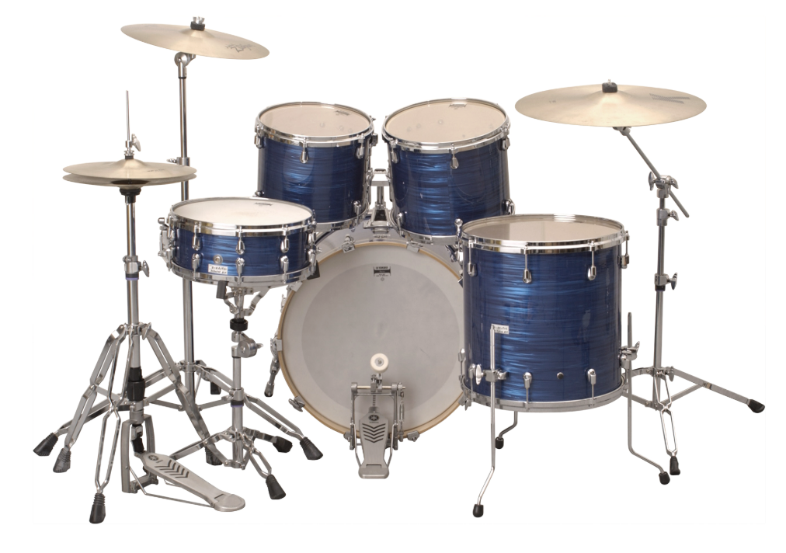

En esta página, exploraremos datos curiosos de la batería, comprenderemos este instrumento y haremos que el usuario tenga una experiencia cercana a este maravilloso instrumento.
La batería es un instrumento musical de percusión compuesto por tambores y platillos. Haz click en los puntos azules para conocer las partes de la batería.
